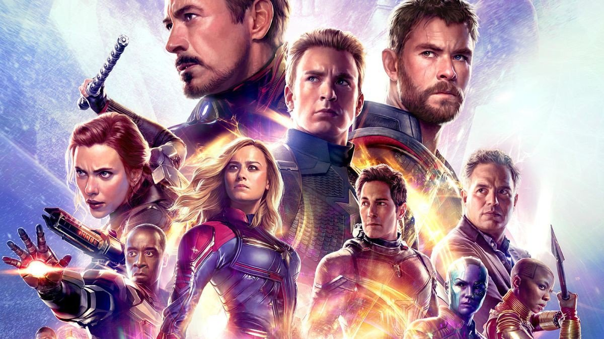
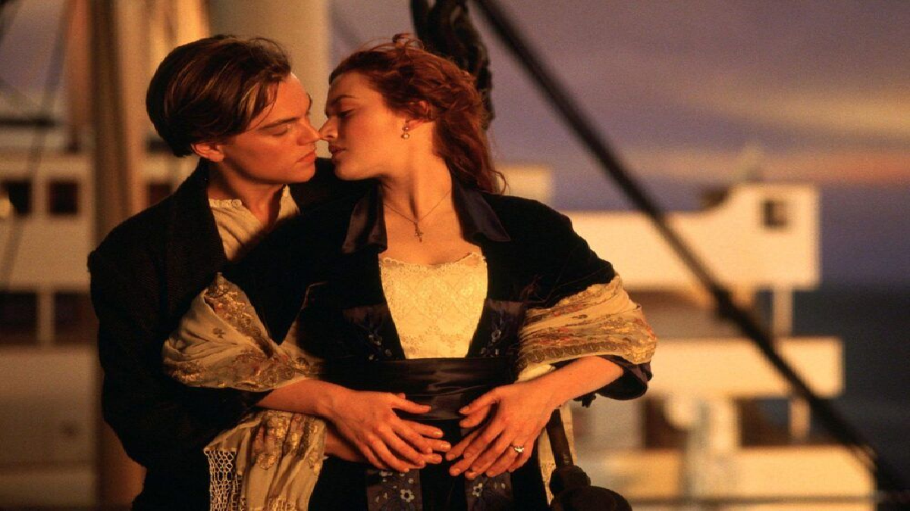
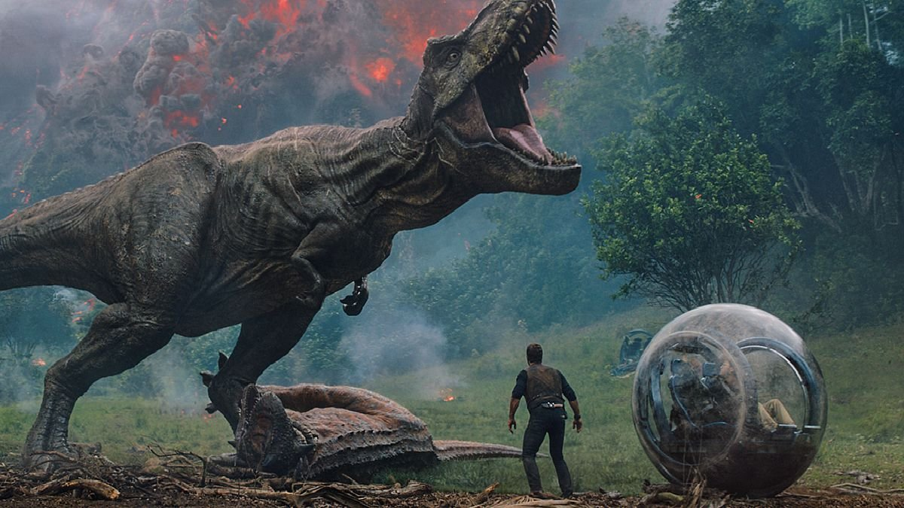
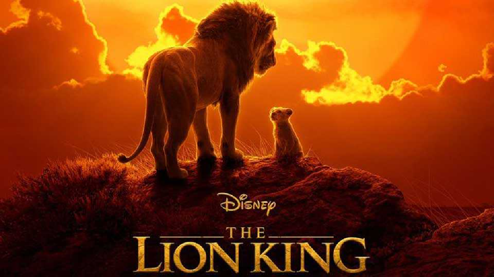

| Đạo diễn: | James Cameron |
| Diễn viên: | Sam Worthington, Zoe Saldafia, Stephen Lang, Michelle Rodriguez, Giovanni Ribisi, Sigourney Weaver. |
| Quốc gia: | USA |
| Doanh số: | $2.787 Billion |
| Tóm tắt: | Người Na’vi đã tổ chức cuộc phản công nhưng cũng chịu tổn thất rất nặng nề, Tsu’tey và Trudy đã hi sinh. Khi đang tuyệt vọng, những động vật hoang dã đột nhiên tham gia trận đánh và áp đảo phe "người trời", Neytiri cho rằng Eywa đã đáp lại lời nguyện cầu của Jake. Jake phá hủy một tàu con thoi chở bom trước khi nó đến chỗ Cây linh hồn. Quaritch đã thoát khỏi con tàu chỉ huy trước khi nó nổ tung và khoác vào người bộ giáp robot AMP. Ông ta tình cờ tìm thấy tiền đồn kết nối bản thể Avatar nơi cơ thể con người của Jake đang nằm, làm Jake ngộ độc bởi bầu khí quyển độc hại. Neytiri sau đó giết Quaritch và kịp thời đến bên Jake để cứu mạng anh. Cả hai khẳng định tình yêu của mình khi lần đầu tiên Neytiri thấy cơ thể con người của Jake. |
| Đạo diễn: | Anthony Russo, Joe Russo |
| Diễn viên: | Robert Downey Jr.,Chris Evans Mark Ruffalo, Chris Hemsworth,Scarlett Johansson, Jeremy Renner,Don Cheadle, Paul Rudd,Brie Larson,Karen Gillan,Danai Gurira, Bradley Cooper,Josh Brolin. |
| Quốc gia: | USA |
| Doanh số: | $2.798 Billion |
| Tóm tắt: | Bộ phim “Biệt Đội Siêu Anh Hùng: Hồi Kết” xuất sắc phá vỡ nhiều kỷ lục phòng vé và soán ngôi bom tấn thời đại “Avatar” với hơn $2.797 tỉ doanh thu. Được giới phê bình đánh giá 94% điểm tích cực trên Rotten Tomatoes, bộ phim về siêu anh hùng dưới sự dẫn dắt của đạo diễn James Cameron vượt qua thành tích của siêu phẩm kinh điển “Titanic” (2007) do chính ông cầm trịch. | 
| Đạo diễn: | James Cameron |
| Diễn viên: | Leonardo DiCaprio Kate Winslet Billy Zane Kathy Bates Frances Fisher Bernard Hill Jonathan Hyde Danny Nucci Gloria Stuart David Warner Victor Garber Bill Paxton |
| Quốc gia: | USA |
| Doanh số: | $2.168 Billion |
| Tóm tắt: | Năm 1996, nhà săn tìm kho báu Brock Lovett và đội của anh lên chiếc tàu nghiên cứu Keldysh đến vị trí xác tàu RMS Titanic huyền thoại ở biển Đại Tây Dương nhằm tìm kiếm một chiếc vòng cổ có đính một viên kim cương rất hiếm, Trái tim của Đại dương. Họ vớt được một chiếc két, bên trong có bức tranh một người phụ nữ trẻ khỏa thân trên người chỉ đeo duy nhất chiếc vòng cổ đó thôi. Bức tranh đề ngày 14 tháng 4 năm 1912, ngày chiếc tàu Titanic va phải tảng băng trôi. Bà lão Rose Dawson Calvert, sau khi biết tin này qua truyền hình, nhận mình chính là người phụ nữ trong bức tranh, tới thăm Lovett và kể l | 
| Đạo diễn: | Colin Trevorrow |
| Diễn viên: | Chris Pratt Bryce Dallas Howard Vincent D'Onofrio Jake Johnson Nick Robinson Ty Simpkins B. D. Wong Irrfan Khan Omar Sy Judy Greer |
| Quốc gia: | USA |
| Doanh số: | $1.607 Billion |
| Tóm tắt: | Zach và Gray, đã lén đi khám phá công viên, bỏ qua lệnh sơ tán và đi vào khu vực cấm bằng chiếc gyrosphere. Con Indominus tấn công chiếc gyrosphere nhưng chúng đã thoát ra được. Chúng tìm thấy trung tâm du khách ban đầu của Công viên kỷ Jura cũ, và sau khi sửa được chiếc xe jeep cũ, Zach và Gray lái nó về công viên. Owen và Claire lần theo dấu vết của chúng sau khi trốn thoát con Indominus. Indominus vẫn tiếp tục tàn phá, giết vài con Apatosaurus và đi vào trong khu chuồng thằn lằn bay. Masrani và hai người lính đuổi theo Indominus bằng trực thăng, nhưng cuộc chạm trán với thằn lằn bay đã khiến cho chiếc trực thăng rơi xuống và giết tất cả mọi người trên trực thăng. Zach và Gray trở lại công viên khi đám thằn lằn bay bắt đầu tấn công. Chúng tìm thấy Owen và Claire khi nhóm lính đang bắn hạ thằn lằn bay. | 
| Đạo diễn: | Jon Favreau |
| Diễn viên: | Donald Glover Seth Rogen Chiwetel Ejiofor Alfre Woodard Billy Eichner John Kani John Oliver Beyoncé Knowles-Carter James Earl Jones |
| Quốc gia: | USA |
| Doanh số: | $1.657 Billion |
| Tóm tắt: | In the Pride Lands of Africa, a pride of lions rule over the animal kingdom from Pride Rock. King Mufasa and Queen Sarabi present their newborn son, Simba, to the gathering animals by Rafiki the mandrill, the kingdom's shaman and advisor. Mufasa shows Simba the Pride Lands and explains to him the responsibilities of kingship and the "circle of life," which connects all living things. Mufasa's younger brother, Scar, covets the throne and plots to get rid of Mufasa and Simba, so he may become king. He tricks Simba and his best friend Nala into exploring a forbidden elephants' graveyard, where they are chased by a clan of hyenas led by the ruthless Shenzi. Mufasa hears about the incident from his majordomo, the hornbill Zazu, and rescues the cubs. Though upset with Simba, Mufasa forgives him and explains that the great kings of the past watch over them from the night sky, from which he will one day watch over Simba. Meanwhile, Scar visits the hyenas and convinces them to help him overthrow Mufasa in exchange for hunting rights in the Pride Lands. | 